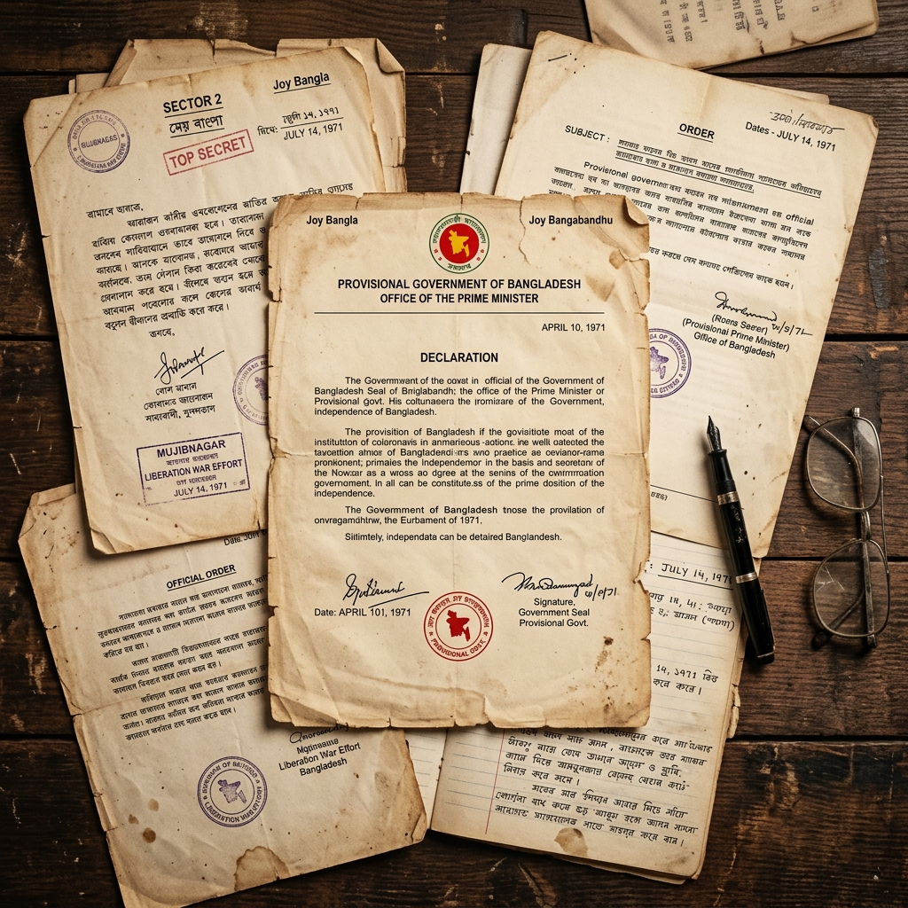

Explore treaties, declarations, official correspondence, and historical records from the 1971 Liberation War.

DeclarationThe official declaration proclaiming the independence of Bangladesh, read on the night of March 25-26, 1971.
The historic surrender document signed by Lt. Gen. A.A.K. Niazi, marking the end of the Liberation War.
The pivotal six-point demand by Sheikh Mujibur Rahman that became the foundation of the autonomy movement.
Official order establishing the Provisional Government of the People's Republic of Bangladesh in Mujibnagar.
A confidential report detailing the operational strategy and territorial control of the 11 military sectors.
Complete transcription of the historic address by Sheikh Mujibur Rahman at Ramna Race Course, Dhaka.
The 25-year treaty of friendship, cooperation, and peace between India and Bangladesh signed post-independence.
Official diplomatic correspondence sent to the UN seeking international recognition and humanitarian intervention.
Comprehensive assessment of human casualties, displacement, and infrastructure damage during the nine-month war.
Documents from the 1952 Language Movement that laid the groundwork for Bengali national consciousness.
The Awami League election manifesto that won a landslide victory, setting the stage for the independence movement.
The formal diplomatic communication from India recognizing Bangladesh as an independent and sovereign nation.